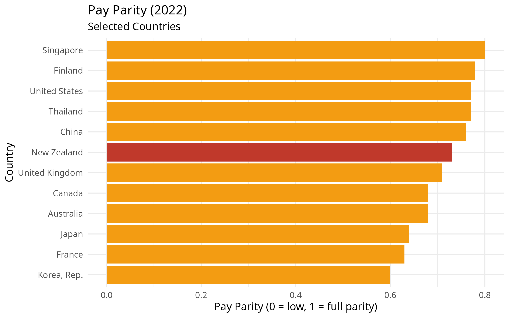
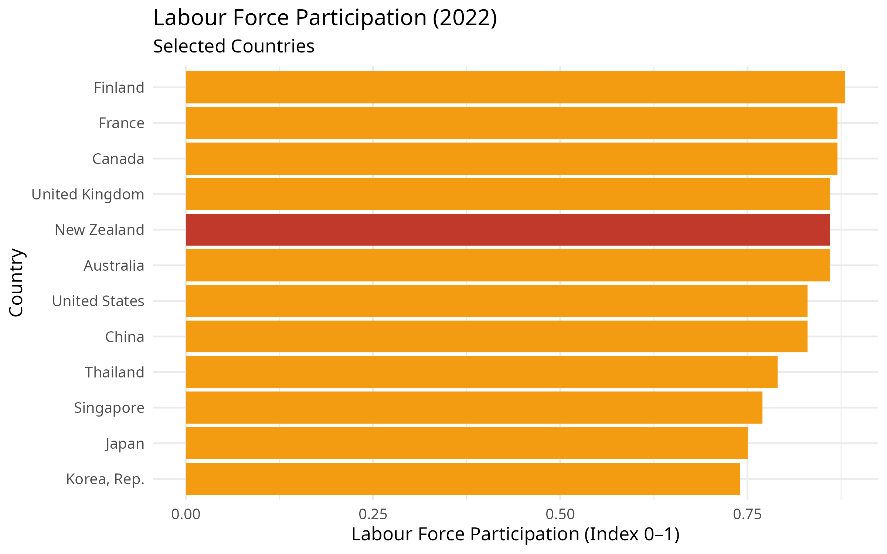
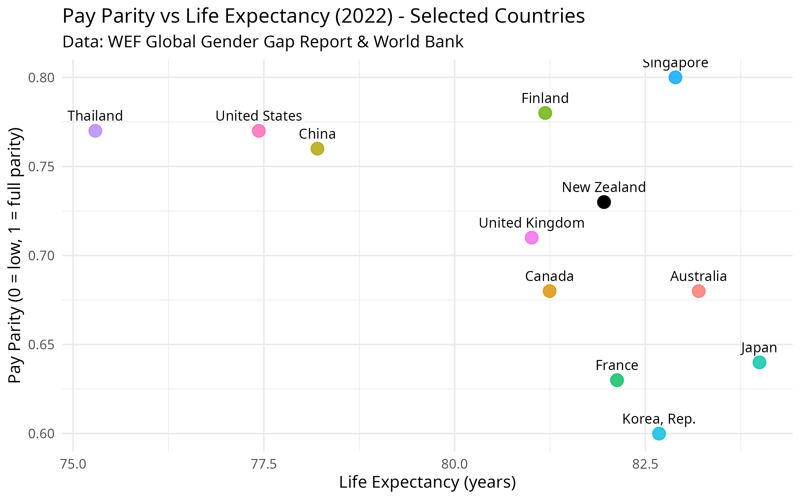
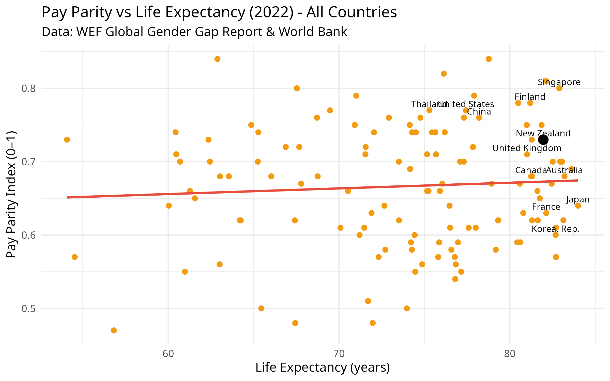
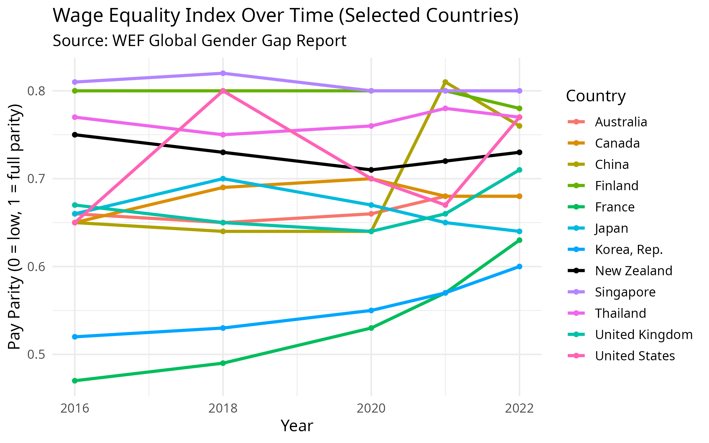
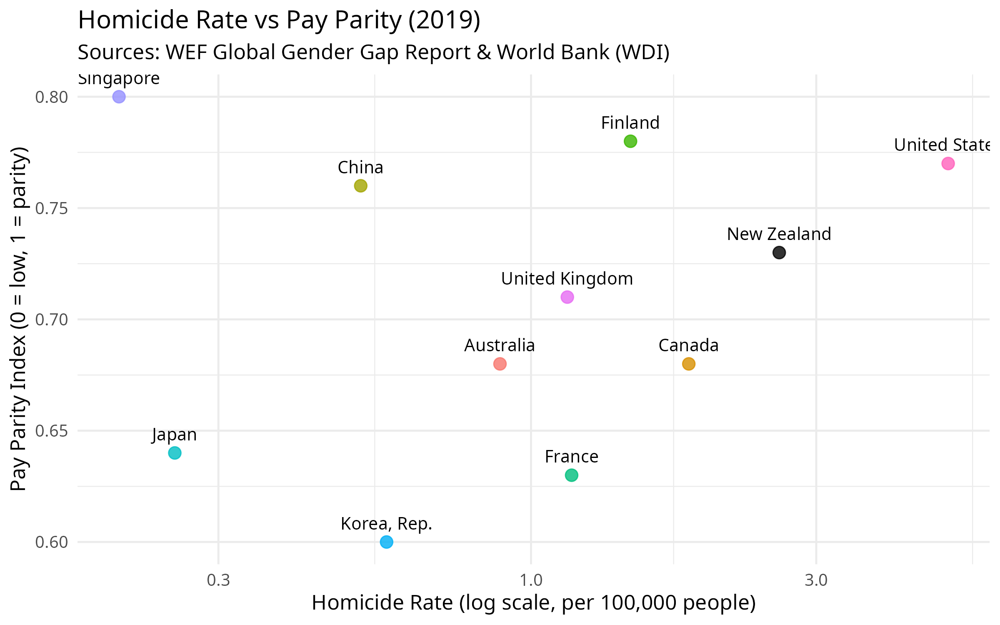
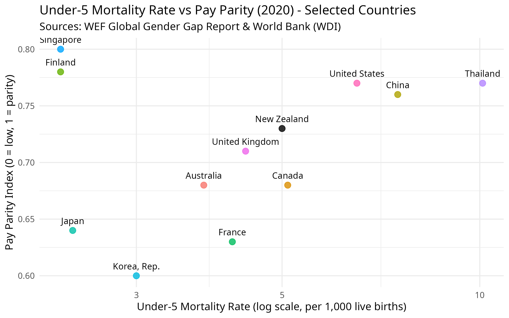

Exploring Pay Parity
Why Pay Parity Matters: Exploring the Broader Impact
Recent moves in New Zealand to roll back efforts aimed at achieving pay parity have sparked renewed debate over the true value of wage equality. These graphs take a look at where New Zealand stands in relation to other countries, looking to see if beyond the moral imperative of fairness, pay parity between men and women has any correlatation to economic performance, social wellbeing, and national resilience.
The World Economic Forum’s Global Gender Gap Report is a rich dataset that provides detailed statistical data regarding wage equality, labor force participation, education, and health outcomes. Data from the excel data set released in 2022 is used. While the report for 2025 is available and can be accessed here, that report is not in a format easily explorable using the R language used to explore the data and create the graphs below.
By examining this data, we can start to understand how gender pay parity correlates with broader societal indicators such as life expectancy, crime, and economic opportunity. This raises important questions about the impact of this policy change on ordinary New Zealanders.

New Zealand’s gender pay parity score in 2022 was 0.73, ranking 33 out of 127 countries globally according to the World Economic Forum.
As shown in the bar chart above, New Zealand ranks lower than I expected in wage equality for similar work compared to other developed economies. I would have expected a higher ranking given the country’s progressive reputation and historical efforts in gender equality such as being the first country in the world to give women the vote.

New Zealand’s Labour Force Participation rate in 2022 was 0.86, ranking 41 out of 146 countries globally according to the World Economic Forum.

We can see that New Zealand ranks well in general compared with the selected countries. It is also worth considering if improving pay parity has an impact on life expectancy.
A Pearson correlation between pay parity and life expectancy gives a value of 0.07. This is a very weak correlation. Other social, economic, legal and healthcare factors likely play a much larger role.
Below is a plot of all countries with data for 2022.

A linear regression suggests that countries with higher pay parity tend to have higher life expectancy. The model explains 0.5% of the variation in life expectancy, with a p-value of 0.453.
The above Pearson correlation measures the strength and direction of a linear relationship between two variables whereas linear regression estimates the relationship by fitting a line to the data, allowing for predictions of one variable based on the other. In summary, correlation quantifies how closely two variables move together, whereas regression provides a predictive model.
In 2022, New Zealand had a pay parity index of 0.74 and a life expectancy of 82.5 years. The country with the lowest pay parity, Chad, had a pay parity index of 0.38 and a life expectancy of 52.5 years.
That’s a difference of 30 years in life expectancy; which is a striking contrast that underscores how broader social and economic inequalities may intersect with health outcomes.
This analysis suggests a moderate positive relationship between gender pay parity and life expectancy. While correlation doesn’t imply causation, countries with more equitable pay tend to report better health outcomes.

Looking at trends over time, we can see countries taking different paths. While some countries have steadily moved towards pay parity, others have plateaued or even regressed. This visual reinforces the idea that policy decisions are important. Countries that commit to closing the wage gap often see tangible progress, with those that stall falling behind their peers.

The Pearson correlation between pay parity and homicide rate is -0.4. This indicates a moderate negative relationship which means that, as gender pay parity improves, homicide rates tend to decline. While this is not a perfect or causal relationship, it’s statistically meaningful and socially relevant.

The Pearson correlation between pay parity and Under 5 mortality rate is -0.04. This suggests that, at the global level, gender pay parity alone is not a strong predictor of child survival outcomes. It’s likely that a complex mix of factors; including income levels, public health systems, education, and social policy all have a stronger impact on child mortality.
Final Thoughts
The data raises a number of thought-provoking questions. While New Zealand performs relatively well on pay parity, it lags behind in key areas such as under-5 mortality and homicide rates. What relationship, if any, exists between gender equity and broader social outcomes? Could a stronger focus on pay parity contribute to improvements in public health and safety, or are these patterns driven by deeper, more complex forces?
As New Zealand considers its future priorities, this analysis invites a wider conversation about the links between equity, wellbeing, and societal resilience. Overall I would give us a B+ - still room to improve in many areas.